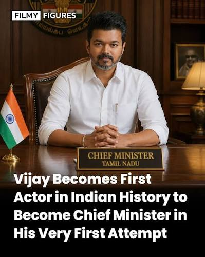

Joseph Vijay Chandrasekhar, popularly known as "Thalapathy" Vijay, is an Indian politician and former actor who serves as the Chief Minister of Tamil Nadu.Early Life and BackgroundBirth: Born on June 22, 1974, in Chennai, Tamil Nadu.Family: Son of noted film director S.A. Chandrasekhar and playback singer Shoba Chandrasekhar.Personal Loss: His younger sister, Vidya, passed away at the age of two, which deeply affected him and inspired the name of his production house, V.V. Productions.

About TVK